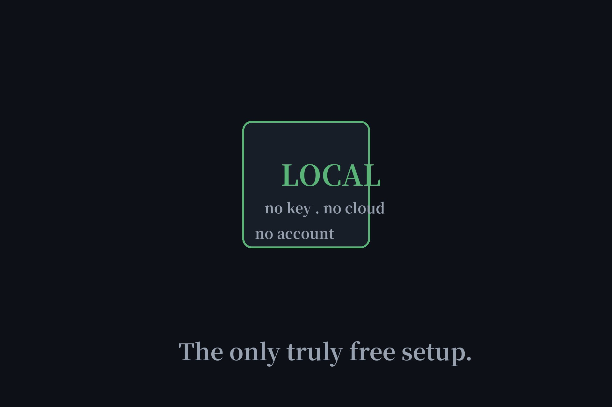

Free AI Coding Agents With No API Key, Actually Tested (2026)
"No API key required" is the new "no sign-up" — a claim that sounds absolute until you read the docs. We verified the two loudest claimants, Freebuff and OpenCode, plus the local-model route everyone cites. One setup is genuinely keyless. The others have asterisks, and the asterisks matter.

The verdicts, up front
| Route | No API key? | No account? | The catch |
|---|---|---|---|
| Open-source agent + Ollama (local) | Yes | Yes | Needs your own hardware/GPU |
| Freebuff | Yes (proxied) | No — account required | Daily Freebucks credits; ads + data terms |
| OpenCode free models | Via Console account | No — Console login | Limited-time promo, list changes |
Path 1: local models — the only truly keyless setup
Pair an open-source agent (OpenCode, Continue.dev, Cline) with Ollama running models on your own machine, and there is no key, no account, no cloud, no telemetry — nothing to sign up for because there's no one to sign up with. This is what "free" meant before the cloud: your hardware, your electricity, your rules. The price is real too — you need a machine with enough GPU, and a 27B model won't run on a Chromebook. But if you have the hardware, this is the only setup on this page with zero asterisks.
Path 2: Freebuff — keyless, but you're the product
Freebuff's "no API key required" checks out: requests route through their backend to DeepSeek, OpenAI, Google, Meta, and others, so you never touch a key. But the rest of the slogan doesn't survive contact with the docs. "No credits" is false — the system runs on Freebucks, 25 free per day (20 over VPN), and you can buy more. An account is mandatory (GitHub or Google, possibly phone or ID verification to prevent multi-account farming). And the business model is ads: your prompts can feed ad-interest profiling, and some submitted data may be used for AI training. Keyless? Yes. Free of strings? No.
Path 3: OpenCode's "free models" — a limited-time promo
OpenCode the software is genuinely free and open-source — one curl command, no signup to download. But "free models included" overpromises: the free models are cloud credits served through an OpenCode Console account, explicitly described in their own docs as a limited-time loss leader, with the list subject to change. Using them means a Console login, an API key from Console, and billing details on file. Several free endpoints may also use your data for model improvement (only the Zero Data Retention ones don't). Treat it as a generous trial, not a permanent free tier — and pair OpenCode with Ollama if you want the keyless version.
Which path should you take?
Have a decent GPU? Go local — it's the only setup nobody can take away from you. Want zero setup and don't mind an account? Freebuff's 25 daily Freebucks cover casual coding, with eyes open about the ads. Want the best agent software and don't mind a key? OpenCode plus any free API tier from our free APIs page is the power-user combo. For the broader coding-agent landscape with every signup catch labeled, see our free coding agents roundup.
FAQ
Is there a free AI coding agent with no API key?
Yes, two ways: run an open-source agent with local models via Ollama (no key, no account, no cloud — but you need your own hardware), or use Freebuff's proxied models (no key needed, but requires an account and runs on daily Freebucks credits).
Is Freebuff really free with no API key?
Half true. You don't need your own API key — requests go through Freebuff's backend. But "no credits" is false: it runs on Freebucks, 25 free per day, and you must register an account (possibly with phone or ID verification).
Are OpenCode's free models really free?
The software is free and open-source, but the "free models included" are limited-time cloud credits via an OpenCode Console account — not bundled, not permanent. The truly keyless route with OpenCode is pairing it with local Ollama models.